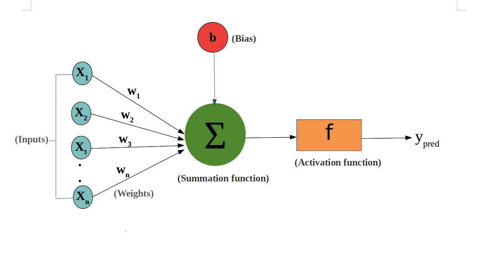

| Neuron element | Symbol | AI Layer | Role |
|---|---|---|---|
| X₁ … Xₙ · Inputs | θᵗ | World AI | The raw world-model — all published science, clinical knowledge, epidemiology. What the network sees before any weighting. |
| b · Bias | L₀ | Prior / Institutional memory | The baseline loss before any evidence is read. The WHO director's prior. What shifts the summation before a single paper is screened. Not neutral — timestamped, institutional, consequential. |
| Σ · Summation | L₀ + Σwᵢ·Lᵢ | Perception AI + Agentic AI | Bias plus weighted inputs. Perception AI sets the weights wᵢ (relevance of each document to the query). Agentic AI does the summing — extraction, screening, aggregation at volume. The composite loss is the output of this node. |
| f · Activation function | f(σ²,λ,ε) | Generative AI | Not a metaphor — literally the activation function. Decides what fires given uncertainty σ², irreversibility penalty λ, and noise ε. The synthesis that compresses the weighted sum into a signal. Only what clears the threshold becomes output. |
| y_pred · Output | ε_FGT | The predicted error | The neuron does not output a recommendation. It outputs a predicted loss — ε_FGT, the estimated gap between what we believe and what is true. The policy brief is a loss estimate, not a fact claim. This is why it needs validation. |
| Backpropagation | L(θᵗ⁺¹) | Embodied AI | y_true arrives ex-post — the federated ground truth, the real-world outcome. The difference (y_true − y_pred) backpropagates to update wᵢ. The human auditor is the backpropagation mechanism. Each review makes the next one better. |
The most important correction to the standard pipeline framing: y_pred is not the answer. It is ε_FGT — the predicted federated ground truth error. The neuron is not saying "here is what is true." It is saying "here is my best estimate of how wrong I am." A policy brief is a loss estimate. It should be read that way.
A GRADE summary with "moderate certainty" is not hedging — it is a precise statement about ε_FGT. The uncertainty is the output. A decision-maker who strips the uncertainty to get a clean recommendation has removed the most important part of the neuron's output.
In the standard neural network diagram, the bias b is often treated as a nuisance parameter, a correction term. Here it is L₀ — the baseline epistemic cost before a single paper is read. The institutional prior. What the WHO director already knows about PM-JAY, about ASHA workers, about what a ministry will actually act on. This shifts the entire summation. A model without L₀ is a model that pretends it has no history.
f(σ²,λ,ε) is literally the activation function — not an analogy. It asks: given this weighted sum of evidence, given how uncertain the inputs are (σ²), how irreversible the recommended action is (λ), and how much noise is in the signal (ε), does this fire? Does this become output? The synthesis step in a literature review is an activation decision. Most of the weighted evidence does not make it through. Only what clears the threshold enters the brief.
The loop closes when y_true arrives — the real-world outcome, months or years later. Did the PM-JAY expansion actually reduce catastrophic health expenditure in the target quintile? That signal is the federated ground truth. The Embodied AI layer — currently a human auditor — is the backpropagation mechanism. She reads the outcome, compares it to what the brief predicted, and updates the weights: which sources were over-weighted, which grey literature was missed, which synthesis decisions were wrong. The next review begins with a better neuron.
AGI, in this frame, is the point at which the backpropagation mechanism has accumulated enough y_true signals — enough consequences — that we trust the weight updates to happen without a human reading every outcome. Not yet. But the direction is visible in the diagram.